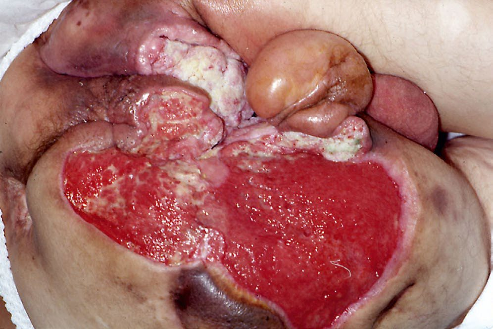

Grafts and Flaps
Summary
- A graft has no blood supply of its own and must acquire one from the bed; a flap brings its own.
- That single distinction explains most of what follows. A skin graft survives for its first three days by imbibition (osmotic uptake from the bed) with neovascularisation beginning around day 3 [1].
- It follows that poorly vascularised beds will not support a graft, including tendon, bone stripped of periosteum, and irradiated tissue [1].
- For flaps the failure mode is different: the commonest cause of pedicled or free flap necrosis is venous thrombosis, not arterial [2].
Definition
Autografts are the patient's own skin, split-thickness or full-thickness, and are the best option [1]. Homografts (allografts) are cadaveric skin; xenografts are porcine [1].
Split-thickness grafts are 0.12 to 0.15 mm thick and include the epidermis and part of the dermis [1].
Pathophysiology
Graft take happens in two phases. Imbibition, an osmotic process, supplies the graft from day 0 to day 3; neovascularisation begins around day 3 [1].
That two-phase mechanism explains the thickness trade-off. Split-thickness grafts are more likely to survive, because a thinner graft makes imbibition and subsequent revascularisation easier; full-thickness grafts undergo less wound contraction, which is why they are used on the palms and the backs of the hands [1].
The donor site of a split-thickness graft regenerates from hair follicles and skin edges [1], which is why the same donor site can be reharvested and a full-thickness donor site cannot.
Allografts vascularise and are eventually rejected, at which point they must be replaced; xenografts do not vascularise at all [1].
Tissue expansion works by local recruitment, thinning of the dermis and epidermis, and mitosis [2].
Clinical features
Autografts reduce infection, desiccation, protein loss, pain, water loss, heat loss and red cell loss compared with dermal substitutes [1].
The ranking of cover is consistent: autograft is best, then homograft, then xenograft, then dermal substitutes [1].
Etiology
Skin grafts are contraindicated where the culture is positive for beta-haemolytic streptococcus, or where bacteria exceed 10⁵ [1].
The commonest reason for skin graft loss is seroma or haematoma formation under the graft, which prevents attachment [1]. This is prevented by a pressure dressing applied over the graft [1].
Reasons to delay autografting are infection, insufficient donor sites, a septic or unstable patient, and not wanting to create further donor sites with their attendant blood loss [1].
Diagnosis
The assessment before grafting is of the bed rather than the wound size: a bed of tendon, bare bone or irradiated tissue will not take a graft and needs a flap instead [1].
Thresholds and severity
Homografts last about 4 weeks and are a good temporising material; xenografts last about 2 weeks [1].
Pressure sores are staged, and the stage determines whether a flap is needed [2]:
| Stage | Description | Treatment |
|---|---|---|
| I | Erythema and pain, no skin loss | Keep pressure off |
| II | Partial skin loss with yellow debris, into the dermis | Local treatment, keep pressure off |
| III | Full-thickness skin loss with subcutaneous fat exposed | Sharp debridement; likely needs a myocutaneous flap |
| IV | Involves bony cortex, muscle, adipose tissue, tendon | Myocutaneous flap, for example a gluteal flap |
Meshing a split-thickness graft expands its coverage and allows exudate to escape, and is the standard approach where a large area must be covered from a limited donor site [3].
Meshed grafts are used on the back, flank, trunk, arms and legs, sites where the cosmetic penalty of the mesh pattern is acceptable [1].
The face and palms are treated differently. The face receives topical antibiotics for the first week, with non-meshed full-thickness graft for areas that have not healed; the palm is grafted with full-thickness skin, preserving the specialised palmar aponeurosis, and splinted in extension for 7 days afterwards [1].
The hand is immobilised in extension for 7 days after full-thickness grafting of a deep burn, then physiotherapy begins; wire fixation of joints may be needed if they are unstable or open [1]. Genitals can be covered with meshed split-thickness graft [1].

Treatment and Management
Flap choice for breast reconstruction has shifted away from muscle-transferring flaps. The DIEP flap is now used more commonly than the TRAM: it transfers the deep inferior epigastric perforators with the overlying fat and skin, with no muscle transferred, anastomosing the inferior epigastric artery and vein to the internal mammary vessels, with the thoracodorsal vessels as an alternative [2]. It produces fewer hernias and less long-term muscle weakness than the TRAM [2].
The TRAM flap transfers a portion of rectus muscle with the flap. A pedicled TRAM relies on the superior epigastric vessels, a free TRAM on the inferior epigastric vessels, and the periumbilical muscle perforators are the most important determinant of TRAM flap viability [2].
Burn scar hypopigmentation and irregularity can be improved with dermabrasion and thin split-thickness grafts [1].
Procedural interventions
A pressure dressing over a fresh graft is not optional, it is the specific measure that prevents the seroma or haematoma that causes most graft failures [1].
Tissue expansion is the technique used where local tissue of matching quality is required but insufficient in quantity, and works by recruitment, dermal and epidermal thinning, and mitosis [2].
Complications
TRAM flap complications are flap necrosis, ventral hernia, infection and abdominal wall weakness [2], the last two being what the DIEP was designed to avoid.
Venous thrombosis, not arterial insufficiency, is the commonest cause of flap necrosis in both pedicled and free flaps [2].
Graft loss is most often mechanical rather than biological: a collection under the graft preventing contact with the bed [1].
Outcomes
The two rules that determine success are matched to the two failure modes. For grafts, ensure contact with a vascularised bed and prevent a collection beneath it. For flaps, watch the venous outflow.
Thickness sets the remaining trade-off: split-thickness for reliability of take, full-thickness for resistance to contraction where function or appearance demands it [1].
References
- The ABSITE Review, 2022, Ch. 17 Burns
- The ABSITE Review, 2022, Ch. 18 Plastics, Skin, and Soft Tissues
- Bailey & Love's Short Practice of Surgery, 28th ed., Ch. 3 Wound healing and tissue repair
- Sabiston Textbook of Surgery, 22nd ed., Ch. 23 Wound Healing